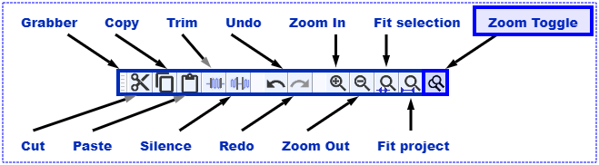
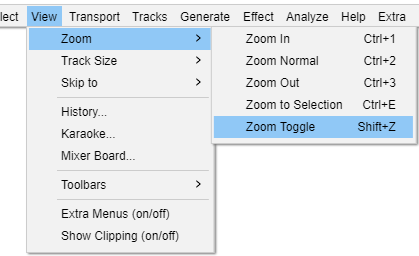
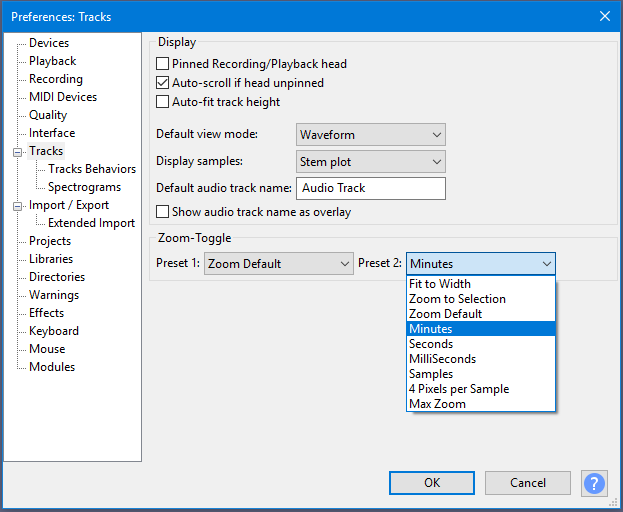
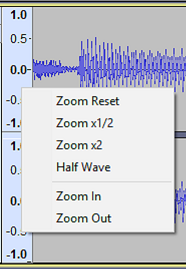
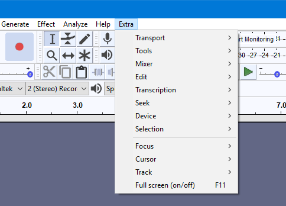
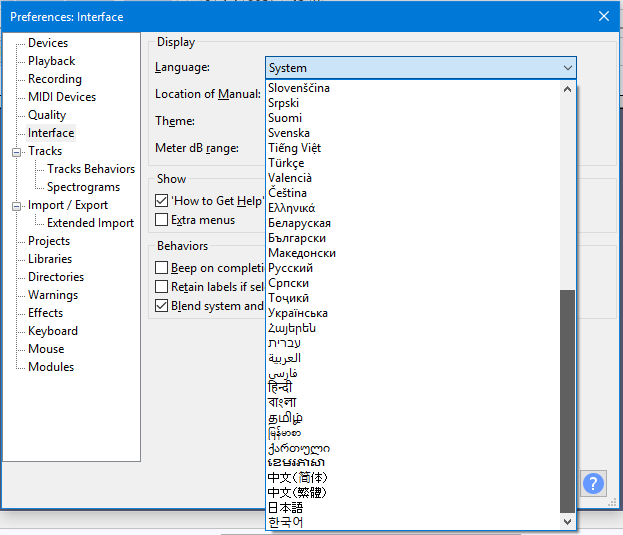

New features in this release
- Details of all the major changes since 2.2.1 can be found in Release Notes 2.2.2.
Contents
- Improved zooming
- Vertical Zooming changes
- Extra menu
- Theme tweaks
- Dropout detection
- Easier access to changing key bindings for shortcuts
- Language selection in Preferences
- Bug Fixes
- Additional new features
Improved Zooming
For this release we have improved the way zooming using your mouse wheel works and provided a new Zoom Toggle function.
- This is particularly for users who zoom in and out a lot, e.g. when using the Repair effect to do detailed work removing clicks in the audio.
Zooming with the mouse wheel
We have changed mouse wheel zooming so that the focus for the zoom is:
- The leftmost or rightmost edge of the current selection, or the editing cursor position (if any of these exist).
- Otherwise zoom focus is as it was before, and is taken as the mouse pointer position.
- Mouse position will also be used as the zoom focus if the mouse position is inside the current selection.
See Zooming using the mouse wheel.
Zoom Toggle
We have introduced a new command, Zoom Toggle, accessed by a new button or by (shortcut Shift + Z).
- 
- Edit toolbar with Zoom Toggle button at the far right of the Toolbar
- 
- Zoom Toggle menu entry in the View menu
Zoom Toggle toggles between two pre-defined zoom levels. These presets are user selectable in Tracks Preferences.
- Defaults are normal Default Zoom level and 4 Pixels per Sample (which shows a fraction of a second of audio as samples)
- Either of the two presets can be changed in Tracks Preferences using the dropdown menus.
- 
- Tracks Preferences showing Zoom Toggle selection dropdown for Preset 2
Vertical Zooming changes
We have made some changes to Vertical Zooming.
Simple Vertical Scrolling
- We have introduced a context menu for the Vertical Scale. This is activated by right-clicking in the Vertical Scale - see Simple mode vertical zooming for details.
- 
Advanced Vertical Zooming
- Left-click, and click&drag, in the Vertical Scale remain available as a user-selectable option - see Advanced mode vertical zooming for details.
- You can turn on advanced mode for vertical zooming from and selecting Advanced Vertical Zooming.
Extra Menu
The menu, created from consolidating and menus that were introduced in the previous 2.2.1 release.
- 
Theme Tweaks
Hover Appearance
- In dark theme, the change in appearance of sliders when you hover over them is greater than before.
- In light and dark themes, buttons such as 'pause' and 'pin' now highlight when you hover over them and they are down. Previously there was no visible change.
- The hover effect for buttons when they are up has been changed to work better in conjunction with this change.
Icon Appearance
- In dark theme the microphone and speaker icons are now brighter and not dulled as they were before.
Dropout detection
We have added dropout detection for this release. This is controlled from a setting in Recording Preferences "Detect dropouts".
- When this setting is "on" (default setting) Audacity will detect dropouts (brief gaps in the recording) and will insert zeroes into the recording to keep the other good parts synchronized.
- Dropouts may be caused by a disk drive that cannot keep up with the recording. This can happen, for example, with a slow USB or network drive, or if antivirus software is slowing writing to disk, or if other activity on the computer is slowing the computer down.
- When recording stops, a message box alerts the user and a label track is added showing the lost parts, labeled with consecutive numbers.
| If you are certain that your recordings do not suffer from dropouts you may wish to turn this option "off". |
| Many users may have been experiencing dropouts and not noticing, they are not discernible while recording only on playback. So Audacity 2.2.2 vould appear much worse than previous releases to such users, when in actual fact Audacity is just alerting them to a problem that they previously would not have been aware of - or might have put down to a bad microphone or poor recording technique. |
Easier access to changing key bindings for shortcuts
For menu commands that are enabled (not grayed-out) if you hold the Shift key and click on the sub-menu item, instead of executing the command the Keyboard Preferences pop open at the chosen command. You can then change that (or any other) shortcut binding.
Language selection in Preferences
Interface Preferences has been upgraded so when selecting languages the proper spelling of these languages is shown with accented and special characters.
- 
Bug Fixes
- There will undoubtedly be some ...
- Unicode page encodings fixed ( ͡° ͜ʖ ͡°) .
Additional new features
This page New features in this release - appendix gives an overview of further new functionality that has been introduced in this release of Audacity.
Links
> Audacity Release Notes 2.2.2 - detailed release notes for this release of Audacity